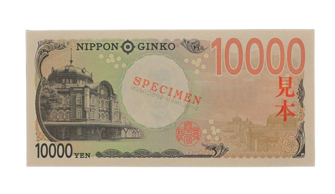

1 yen coin
The 1-yen coin (一円硬貨, Ichi-en kōka) is the smallest denomination of the Japanese yen currency. Historically they were initially made of both silver and gold in the early 1870s. Issues facing the Japanese government at the time included wanting to adopt the gold standard, and competing against the Mexican dollar for use in foreign trade. The decision was made to use silver one yen coins exclusively outside of Japan for trade, while gold coins were minted and used in mainland Japan.
5 yen coin
The 5-yen coin (五円硬貨, Go-en kōka) is a denomination of the Japanese yen. The current design was first minted in 1959, using Japanese characters known as the "new script" and kanji in the kaisho style, and were also minted from 1948 to 1958 using "old-script" Japanese characters in the gothic style.10 yen coin
The 10 yen coin (十円硬貨, Jū-en kōka) is one denomination of the Japanese yen. The obverse of the coin depicts the Phoenix Hall of Byōdō-in, a Buddhist temple in Uji, Kyoto prefecture, with the kanji for "Japan" and "Ten Yen". The reverse shows the numerals "10" and the date of issue in kanji surrounded by bay laurel leaves.50 yen coin
The 50 yen coin (五十円硬貨, Gojū-en kōka) is a denomination of Japanese yen. These coins were first minted in 1955, and concurrently circulated alongside a banknote denomination of the same amount. 50 yen notes were eventually pulled from circulation shortly before the center of the 50 yen coin was holed. The first yen coins were made of pure nickel and slightly larger than the ones used today.100 yen coin
The 100 yen coin (百円硬貨, Hyaku-en kōka) is a denomination of Japanese yen. These coins were first minted in 1957 using a silver alloy, before the current design was adopted with an alloy change in 1967.[1] It is the second-highest denomination coin in Japan, after the 500 yen coin. The current 100 yen coin is one of two denominations that depict the emperor's rule date in Arabic numerals rather than kanji.500 yen coin
The 500 yen coin (Japanese: 五百円硬貨, Hepburn: Gohyaku-en kōka) is the largest denomination of Japanese yen coin issued for circulation. These coins were first struck in 1982 as the vending machine industry needed a higher valued coin for use in their machines. The denomination had previously been issued as paper currency which co-circulated with the new coins until 1994.1000 yen note
The ¥1,000 note is currently the lowest value yen banknote and has been used since 1945, excluding a brief period between 1946 and 1950 during the Allied occupation of Japan.5000 yen note
The ¥5,000 note (五千円紙幣 gosen-en shihei) is a banknote denomination of the Japanese yen. It was first introduced in Japan in 1957 to the third series of banknote releases (Series C). The latest release is Series F (2024).
